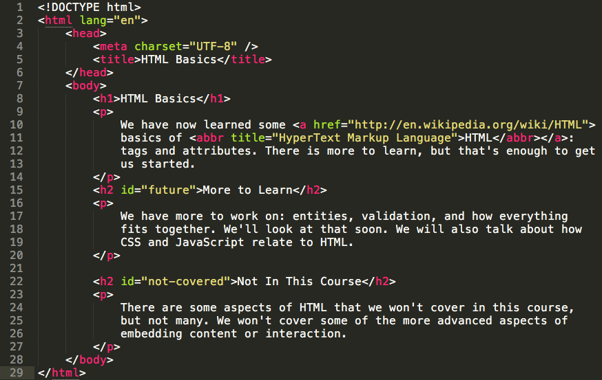

CMPT 165
Introduction to the Internet
and the World Wide Web
Unit2: Markup and HTML
Topics
- Text Files and Markup
- HTML and Tags
- Attributes and More HTML Tags
- Semantic Markup
- Validating HTML
- URLs: Links and Images
- Character References
Attributes
attributes are used to change
the meaning or behaviour of tags
- the attr. is placed in the opening tag, before the ">".
- it has a value which follows the attribute in quotes
cite tag
we can indicate what language is being used in a citation using the <cite> element and the lang attribute for it
<p>In his work
<cite lang="la">Principia Mathematica</cite>,
Newton introduced...</p>
This could be used by a browser to offer an automatic translation,
or by a speech browser to change pronunciation rules to read the content correctly
abbr tag
the <abbr> tag is used to indicate an abbreviation, or other short-form or contraction.
The title attribute is used to provide an expansion of the abbreviation
<p>In this course, we are using
<abbr title="HyperText Markup Language">HTML</abbr>
to create web pages.</p>
to offer the reader an expansion of the abbreviation
there is one tag (and attribute to go with it) that is
very important to make the Web what it is
it creates links
anchor tag
the <a> tag is is used to create links.
the "href" attribute gives the destination for the link
<p>Some popular web browsers are
<a href="https://www.mozilla.org/en/firefox/">Firefox</a> and
<a href="https://www.google.com/chrome/">Chrome</a>.</p>
if you try clicking on the links, you will go to the URLs given by the "href"
horizontal rule tag
<hr /> is one of the empty tags which is in charge of putting a horizontal line in the parent container
<p>And the long day was finally over.</p>
<hr />
<p>The next day, they woke up and...</p>
And the long day was finally over.
The next day, they woke up and...
[line] break tag
<br /> is another empty tag which is in charge of putting a line break after the previous content
<p>And the long day was finally over.</p>
<br />
<p>The next day, they woke up and...</p>
And the long day was finally over.
The next day, they woke up and...
A Complete Webpage
 * image from http://www.cs.sfu.ca/CourseCentral/165/common/study-guide/figures/complete-page.png
* image from http://www.cs.sfu.ca/CourseCentral/165/common/study-guide/figures/complete-page.png
The Same Webpage With CSS
HTML Basics
We have now learned some basics of HTML: tags and attributes. There is more to learn, but that's enough to get us started.
More to Learn
We have more to work on: entities, validation, and how everything fits together. We'll look at that soon. We will also talk about how CSS and JavaScript relate to HTML.
Not In This Course
There are some aspects of HTML that we won't cover in this course, but not many. We won't cover some of the more advanced aspects of embedding content or interaction.
The Webpage HTML Code
Different Markup Types
- Semantic Markup
- Visual/Presentational Markup
Semantic Markup
aims to describe the semantics of content (e.g. HTML)
- what that content means
- what kind of content it is
- or what its purpose or role is on the page
Visual/Presentational Markup
aims to specify the appearance of content directly (e.g MS Word Visual Formatting)
example discriptor:
this text is on a new line, left justified, in a 12pt font
with Visal Markup
- we will not be able to easily re-style everything
- we would have to change each "paragraph" separately
if the markup is well written, the search engines can extract lots of meaning (semantics) just from our markup (e.g. the page outline)
- HTML Basics
- More to Learn
- Not In This Course
Since HTML is a semantic markup language,
we should be keeping the meaning of our content in mind as we are creating the pages
Example sentences to mark up
Why do you think that is interesting?
You must never let that happen.
I used the <li> tag for each item.
Example mark up code
<p>Why do <em>you</em> think that is interesting?</p>
<p>You must <strong>never</strong> let that happen.</p>
<p>I used the <code><li></code> tag for each item.</p>
class and id Attributes
the class and id attributes can be used to give
extra semantic information about elements.
e.g. we can continue to use <p> for most paragraphs,
but <p id="copyright"> for the one that is semantically different from the others
The value of class and id can be any word, but should be meaningful (i.e. something about the meaning, not the appearance)
what is the important difference between
the class and the id attributes ?
there is no way we could add HTML tags to match every kind of content that everyone ever uses
that is why we need Generic Tags: <div> and <span>
Block-Level Elements
- hold block-level content (or sometimes flow content)
- it can go directly inside the <body> and is displayed below the previous block
- Most commonly used: <div> element
-
Other block-level elements we have seen include
<p>, <h1>, <h2>, <ul>, and <li>
Inline-Level Elements
- hold inline content (or sometimes phrasing content)
- inline content goes inside a block
- it needs to be part of a paragraph, heading, list item, or other block
- Most commonly used: <span> element
-
Other inline elements include
<em>, <a>, and <abbr>
Because they don't have any meaning on their own,
<div> and <span>
should always be given a meaningful class or id value that indicates their purpose on the page